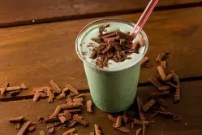

Milkshake Chocolate com Menta

Descrição
Na receita de hoje iremos fazer um delicioso e creme milkshake de chocolate com menta.
Ingredientes
- 2 xícaras de sorvete de menta com pedaços de chocolate
- 1/2 xícara de leite ajuste conforme a preferência de espessura.
- Chantilli para servir.
- Raspas de chocolate ou pedaços para decorar
- Algumas folhas de menta fresca para um toque extra de frescor opcional.
Etapas
- Coloque o sorvete de menta com chocolate no liquidificador.
- A quantidade de leite pode ser ajustada dependendo de quão espesso ou líquido você prefere o seu milk-shake.
- Bata até qye a mistura fique homogênea.
- Se desejar pedaços de chocolate mais inteiros na bebida, ajuste o tempo de blendagem para menos tempo.
- Sirva imediatamente em copos altes, adicionando chantili no topo.
- Decore com raspas de chocolate ou pedaços de chocolate e, se desejar, uma folhinha de menta para um toque decorativo e refrescante.
- Insira um canudo e desfrute dessa deliciosa combinação de sabores.